6 From Probability to Statistics
Probability provides a mathematical language for describing uncertainty. Statistics uses that language to learn from data.
The transition from probability to statistics occurs when we reinterpret probability models as descriptions of populations and data-generating processes. Instead of asking:
“What is the probability of an event?”
we begin asking:
“What can we learn about an unknown population from a random sample?”
This shift is conceptual but fundamental.
6.1 Population as a Distribution
A coherent way to unify probability and statistics is to model the population as a probability distribution.
In this framework:
- The population is not just a collection of numbers.
- It is a data-generating mechanism governed by a probability distribution.
- Observations are random outcomes generated by that mechanism.
Formally, we think of a population as a distribution \(F\) with parameters \(\theta\).
Each observation is a random variable:
\[ X \sim F. \]
A sample of size \(n\) is:
\[ X_1, X_2, \dots, X_n \sim F. \]
A statistic is a function of these random variables:
\[ T = g(X_1, \dots, X_n). \]
The sampling distribution describes how \(T\) behaves across repeated samples.
6.1.1 The Structural Framework
We summarize the statistical framework as follows:
- The population is modeled by a probability distribution with parameters.
- Samples are random draws from this distribution.
- Statistics are computed from samples.
- Sampling distributions describe the variability of statistics.
- Inference uses sampling distributions to learn about parameters.
This framework explains:
- Why statistics vary from sample to sample.
- Why uncertainty is unavoidable.
- Why larger samples produce more stable conclusions.
6.2 Examples
6.2.1 Example 1: A Normal Population
Suppose a population is modeled as:
\[ X \sim N(\mu = 10, \sigma = 2). \]
The parameter \(\mu = 10\) is fixed but unknown in practice. A sample mean \(\bar{X}\) will vary across samples.
set.seed(123)
means <- replicate(1000, mean(rnorm(20, mean = 10, sd = 2)))
hist(means, probability = TRUE, breaks = 30,
main = "Sampling Distribution of the Mean")
abline(v = 10, col = 2, lwd = 2)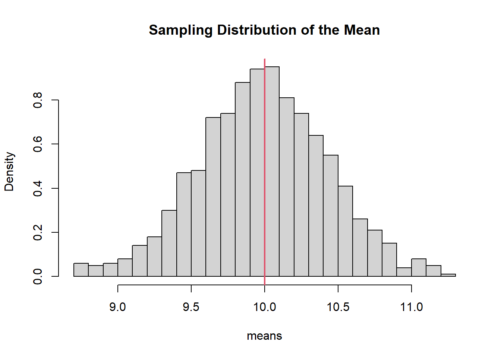
The vertical line marks the population mean. The histogram shows how sample means fluctuate around it.
6.3 What Does Bias Mean Under This Framework?
Bias refers to systematic deviation from a parameter.
For an estimator \(\hat{\theta}\):
\[ \text{Bias}(\hat{\theta}) = E[\hat{\theta}] - \theta. \]
An estimator is unbiased if:
\[ E[\hat{\theta}] = \theta. \]
Example: The sample mean.
## [1] 5.003572The average of the sample means is very close to the true mean. The sample mean is unbiased.
Bias is therefore defined in terms of the sampling distribution, not a single dataset.
6.4 Role of Independence
Independence is foundational because it simplifies probability structure.
If \(X_1, \dots, X_n\) are independent:
- Joint probabilities factorize.
- Variances add cleanly.
- Limit theorems apply.
- Sampling distributions behave predictably.
6.4.2 Deterministic Sequence (No Randomness)
There is no randomness here. No sampling distribution exists.
6.5 Sampling as Drawing Random Variables
We model the population as a distribution \(F\).
A sample of size \(n\):
\[ X_1, X_2, \dots, X_n \sim F. \]
6.6 Parameters and Statistics
A parameter describes a population distribution.
Examples:
- \(\mu\) (mean)
- \(\sigma^2\) (variance)
- \(p\) (proportion)
- \(\lambda\) (Poisson rate)
A statistic is computed from a sample.
Examples:
- \(\bar{X}\)
- \(S^2\)
- \(\hat{p}\)
Parameters are fixed (but unknown). Statistics are random variables.
6.7 Example: Random Sample as Simple Random Sampling
Let’s illustrate the comparison between Simple Random Sampling and a Random Sample with an example about adult males heights. We have a data set of an imaginary country with race information.
# Set seed
set.seed(2026)
# Generation the Population
# Population
pop <- 100000
# Races
racNam <- c("white",
"hispanic",
"black",
"asian")
# Height Data by Race
heiRacMea <- c(71, 67, 70, 66)
heiRacSd <- c(3.5, 3.2, 3.4, 3.1)
# Race Sampling
rac <- sample(x = racNam,
size = pop,
replace = TRUE,
prob = c(0.50, 0.30, 0.15, 0.05))
# Number of Peoble by Race
numPeoRac <- c(sum(rac == "white"),
sum(rac == "hispanic"),
sum(rac == "black"),
sum(rac == "asian"))
# Height Sampling
hei <- numeric(length = pop)
hei[rac == "white"] <- round(rnorm(n = numPeoRac[1], mean = heiRacMea[1], sd = heiRacSd[1]))
hei[rac == "hispanic"] <- round(rnorm(n = numPeoRac[2], mean = heiRacMea[2], sd = heiRacSd[2]))
hei[rac == "black"] <- round(rnorm(n = numPeoRac[3], mean = heiRacMea[3], sd = heiRacSd[3]))
hei[rac == "asian"] <- round(rnorm(n = numPeoRac[4], mean = heiRacMea[4], sd = heiRacSd[4]))
# Plot Race
barplot(numPeoRac,
main = "Actual Race Distribution")
axis(side = 1, at = 1:4, labels = racNam)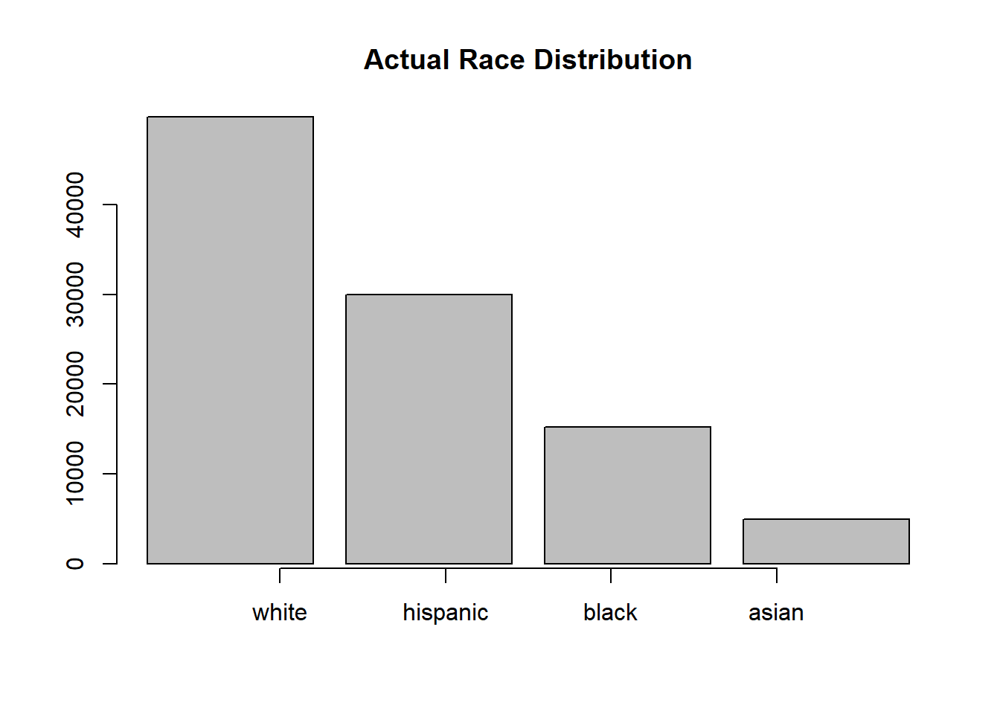
# Height Population Distribution
heiDisPop <- hist(hei,
breaks = 25,
main = "Actual Height Population Distribution",
xlab = "Height in inches",
freq = FALSE)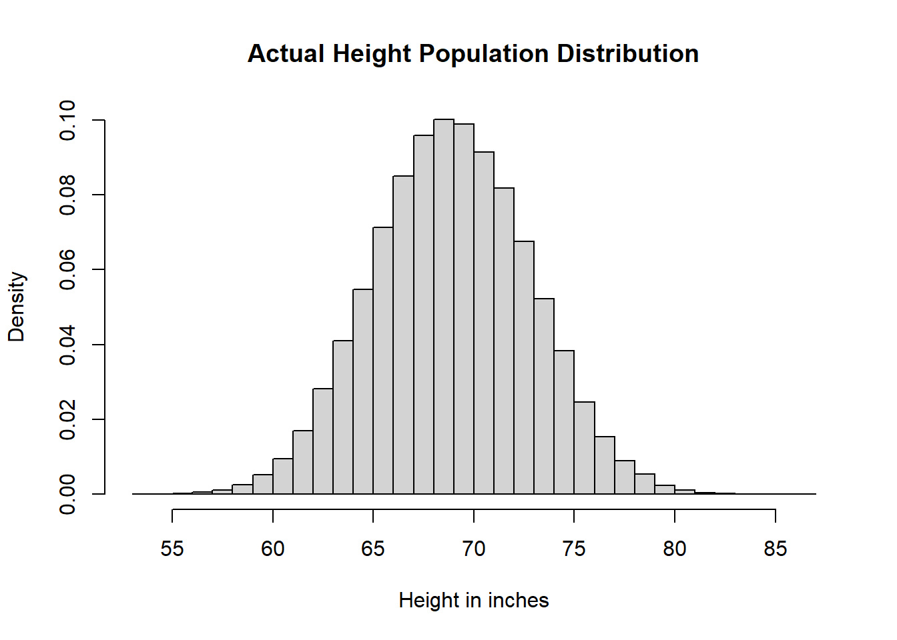
# Simple Random Sampling
samSiz <- 1000
simRanSam <- sample(x = hei, size = samSiz, replace = FALSE)
# Histogram Sample
heiDisSimRanSam <- hist(simRanSam,
breaks = 25,
main = "Simple Random Sampling Distribution",
xlab = "Height in inches",
freq = FALSE)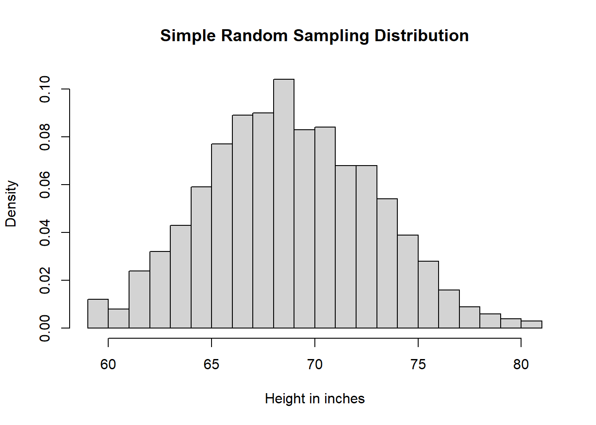
# Comparison
xmin <- min(heiDisPop$breaks, heiDisSimRanSam$breaks)
xmax <- max(heiDisPop$breaks, heiDisSimRanSam$breaks)
ymin <- min(heiDisPop$density, heiDisSimRanSam$density)
ymax <- max(heiDisPop$density, heiDisSimRanSam$density)
plot(heiDisPop,
xlab = "Height in inches",
main = "Distributions",
freq = FALSE,
border = NA,
col = rgb(1, 0, 0, 0.25),
xlim = c(xmin, xmax),
ylim = c(0, ymax))
par(new=TRUE)
plot(heiDisSimRanSam,
xlab = "Height in inches",
main = "Distributions",
freq = FALSE,
border = NA,
col = rgb(0, 0, 1, 0.25),
xlim = c(xmin, xmax),
ylim = c(0, ymax))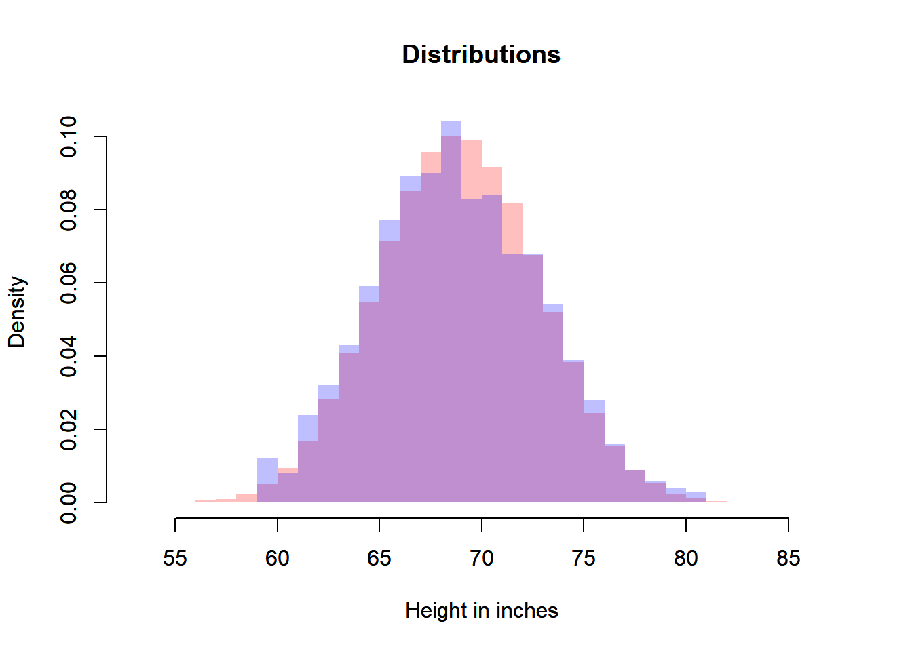
# Random Sample (from a Theoretical Probability Distribution)
meaPop <- mean(hei)
stdPop <- sd(hei)
ranSam <- rnorm(n = samSiz, mean = meaPop, sd = stdPop)
# Histogram Random Sample
heiDisRanSam <- hist(ranSam,
breaks = 25,
main = "Random Sample Distribution",
xlab = "Height in inches",
freq = FALSE)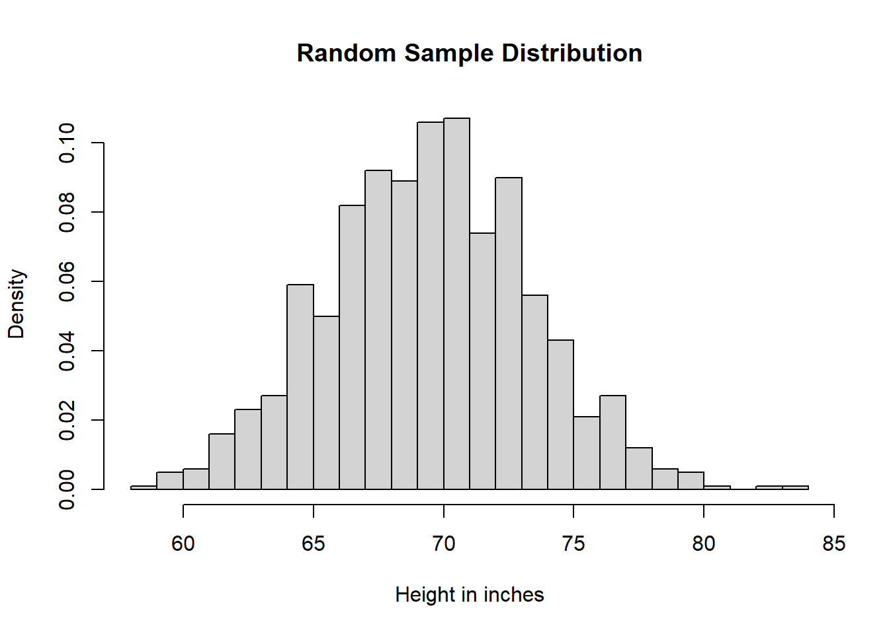
# Comparison
xmin <- min(heiDisPop$breaks, heiDisSimRanSam$breaks, heiDisRanSam$breaks)
xmax <- max(heiDisPop$breaks, heiDisSimRanSam$breaks, heiDisRanSam$breaks)
ymin <- min(heiDisPop$density, heiDisSimRanSam$density, heiDisRanSam$density)
ymax <- max(heiDisPop$density, heiDisSimRanSam$density, heiDisRanSam$density)
plot(heiDisPop,
xlab = "Height in inches",
main = "Distributions",
freq = FALSE,
border = NA,
col = rgb(1, 0, 0, 0.25),
xlim = c(xmin, xmax),
ylim = c(0, ymax))
par(new=TRUE)
plot(heiDisRanSam,
xlab = "Height in inches",
main = "Distributions",
freq = FALSE,
border = NA,
col = rgb(0, 1, 0, 0.25),
xlim = c(xmin, xmax),
ylim = c(0, ymax))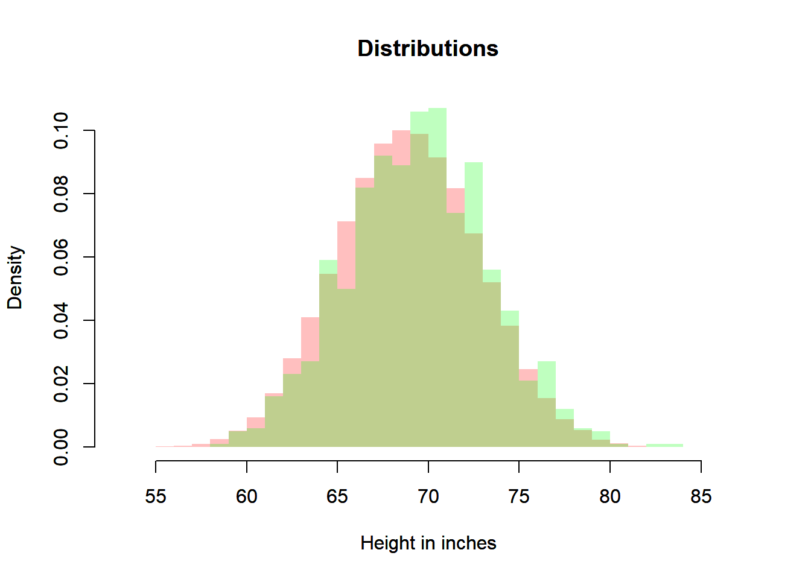
# Biased Sample
biaSam <- sample(x = hei[rac == "asian"], size = samSiz, replace = FALSE)
# Histogram Biased Sample
heiDisBiaSam <- hist(biaSam,
breaks = 25,
main = "Biased Sample Distribution",
xlab = "Height in inches",
freq = FALSE)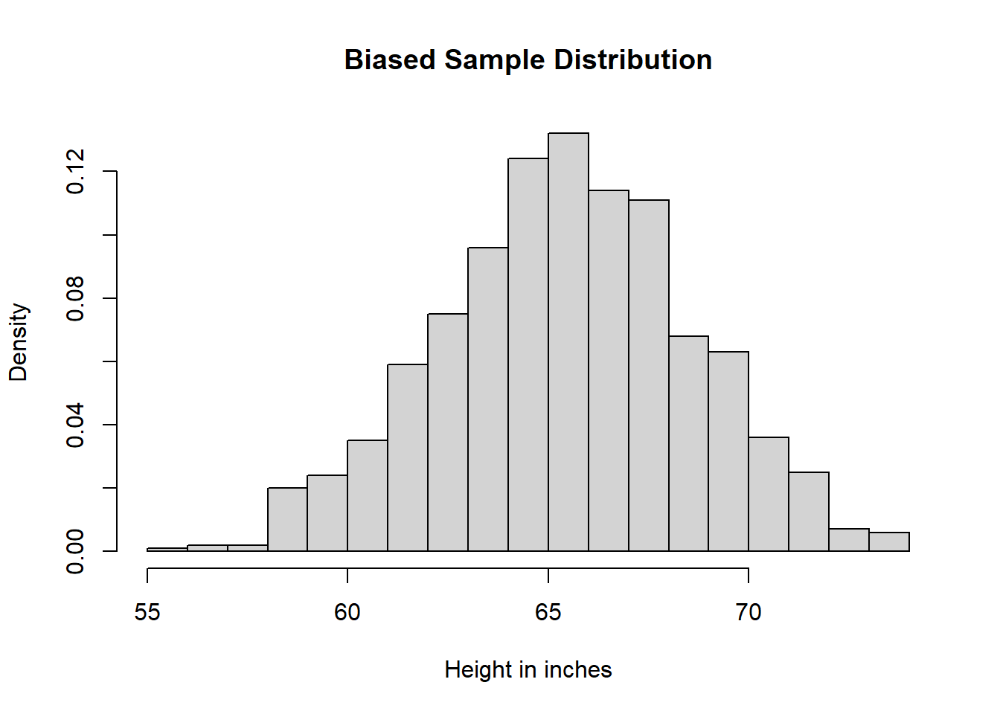
# Comparison
xmin <- min(heiDisPop$breaks, heiDisSimRanSam$breaks, heiDisRanSam$breaks, heiDisBiaSam$breaks)
xmax <- max(heiDisPop$breaks, heiDisSimRanSam$breaks, heiDisRanSam$breaks, heiDisBiaSam$breaks)
ymin <- min(heiDisPop$density, heiDisSimRanSam$density, heiDisRanSam$density, heiDisBiaSam$density)
ymax <- max(heiDisPop$density, heiDisSimRanSam$density, heiDisRanSam$density, heiDisBiaSam$density)
# Biased Sample and Population
plot(heiDisPop,
xlab = "Height in inches",
main = "Distributions (Population and Biased Sample)",
freq = FALSE,
border = NA,
col = rgb(1, 0, 0, 0.25),
xlim = c(xmin, xmax),
ylim = c(0, ymax))
par(new=TRUE)
plot(heiDisBiaSam,
freq = FALSE,
main = "",
xlab = "",
border = NA,
col = rgb(1, 0, 1, 0.25),
xlim = c(xmin, xmax),
ylim = c(0, ymax))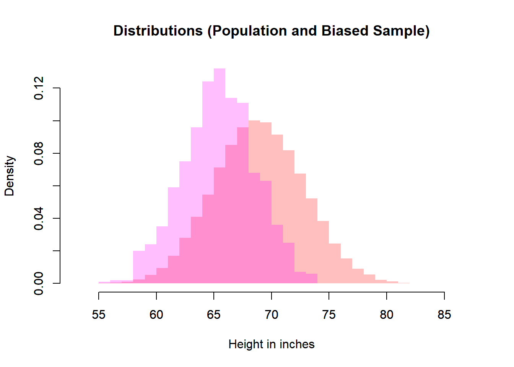
# Biased Sample and Simple Random Sample
plot(heiDisSimRanSam,
xlab = "Height in inches",
main = "Distributions (SRS and Biased Sample)",
freq = FALSE,
border = NA,
col = rgb(0, 0, 1, 0.25),
xlim = c(xmin, xmax),
ylim = c(0, ymax))
par(new=TRUE)
plot(heiDisBiaSam,
freq = FALSE,
main = "",
xlab = "",
border = NA,
col = rgb(1, 0, 1, 0.25),
xlim = c(xmin, xmax),
ylim = c(0, ymax))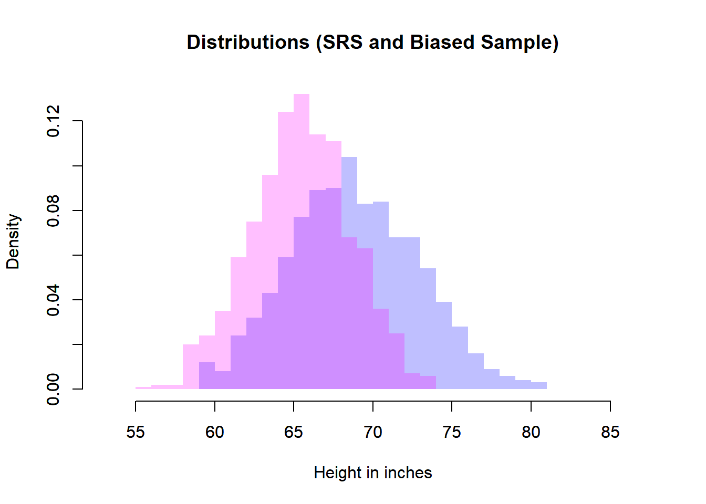
# Biased Sample and Simple Random Sample
plot(heiDisRanSam,
xlab = "Height in inches",
main = "Distributions (Random Sample and Biased Sample)",
freq = FALSE,
border = NA,
col = rgb(0, 1, 0, 0.25),
xlim = c(xmin, xmax),
ylim = c(0, ymax))
par(new=TRUE)
plot(heiDisBiaSam,
freq = FALSE,
main = "",
xlab = "",
border = NA,
col = rgb(1, 0, 1, 0.25),
xlim = c(xmin, xmax),
ylim = c(0, ymax))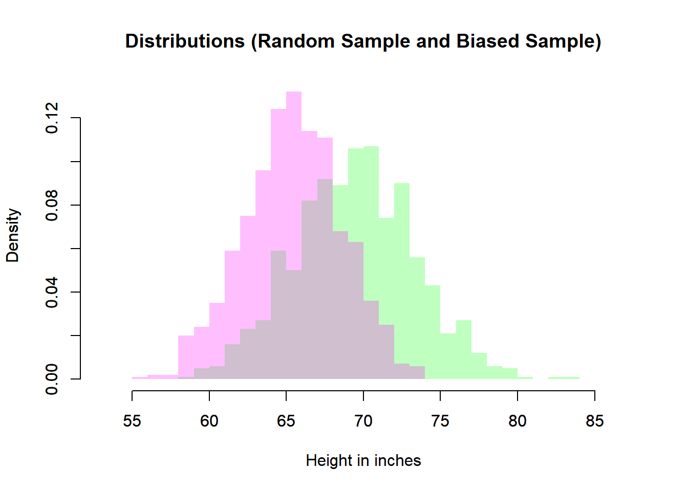
6.8 Sampling Distribution of a Mean
Let \(X_1, \dots, X_n\) be independent and identically distributed (i.i.d.) random variables such that
\[ \mathbb{E}[X_i] = \mu, \qquad \mathbb{V}(X_i) = \sigma^2. \]
The sample mean is defined as
\[ \bar{X} = \frac{1}{n} \sum_{i=1}^n X_i. \]
Because each \(X_i\) is random, \(\bar{X}\) is also a random variable. Its probability distribution is called the sampling distribution of the mean.
6.8.1 Why the Sample Mean is Random ?
Even when the population distribution is fixed, different random samples produce different values of \(\bar{X}\). Thus:
- The population mean \(\mu\) is a fixed constant.
- The sample mean \(\bar{X}\) varies from sample to sample.
- The distribution of all possible \(\bar{X}\) values is the sampling distribution.
This distinction between parameter and statistic is fundamental:
- \(\mu\) is fixed but unknown.
- \(\bar{X}\) is observable but random.
6.8.2 Fundamental Properties
Because expectation is linear,
\[ \mathbb{E}[\bar{X}] = \mathbb{E}\left[\frac{1}{n}\sum_{i=1}^n X_i\right] = \frac{1}{n}\sum_{i=1}^n \mathbb{E}[X_i] = \frac{1}{n}(n\mu) = \mu. \]
6.8.2.1 Unbiasedness
\[ \mathbb{E}[\bar{X}] = \mu. \]
The sample mean is therefore an unbiased estimator of the population mean.
6.8.3 Interpretation: Averaging Reduces Variability
The factor \(\frac{1}{n}\) in the variance expression is crucial.
As the sample size increases:
- The expectation remains \(\mu\).
- The variance decreases.
- The distribution becomes more concentrated around \(\mu\).
Intuitively, averaging “cancels out” random fluctuations. Individual observations may vary substantially, but their average stabilizes.
Formally,
\[ \mathbb{V}(\bar{X}) \to 0 \quad \text{as} \quad n \to \infty. \]
This is the mechanism behind the Law of Large Numbers.
6.8.3.1 Simulation: Height Example
Continuing with the height examples, we can see the behavior of sample mean. Different samples will produce different means
# Number of Replications
numRep <- 1000
# Sample Size
samSiz <- 1000
# Sampling Means
## Simple Random Sampling
meaSimRanSam <- replicate(n = numRep, mean(sample(x = hei, size = samSiz, replace = FALSE)))
meaRanSam <- replicate(n = numRep, mean(rnorm(n = samSiz, mean = meaPop, sd = stdPop)))
meaBiaSam <- replicate(n = numRep, mean(sample(x = hei[rac == "asian"], size = samSiz, replace = FALSE)))
# Histograms
meaDisSimRanSam <- hist(meaSimRanSam,
breaks = 25,
main = "Samplig Distribution Mean (SRS)",
xlab = "Height in inches",
freq = FALSE)
abline(v = meaPop, lwd = 2, col = rgb(1, 0, 0))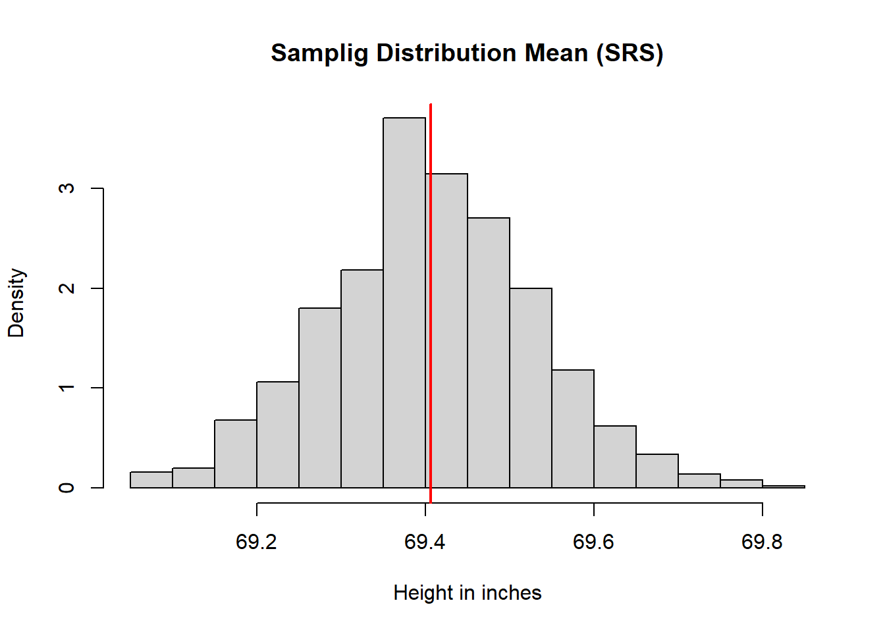
meaDisRanSam <- hist(meaRanSam,
breaks = 25,
main = "Samplig Distribution Mean (Random Sample)",
xlab = "Height in inches",
freq = FALSE)
abline(v = meaPop, lwd = 2, col = rgb(1, 0, 0))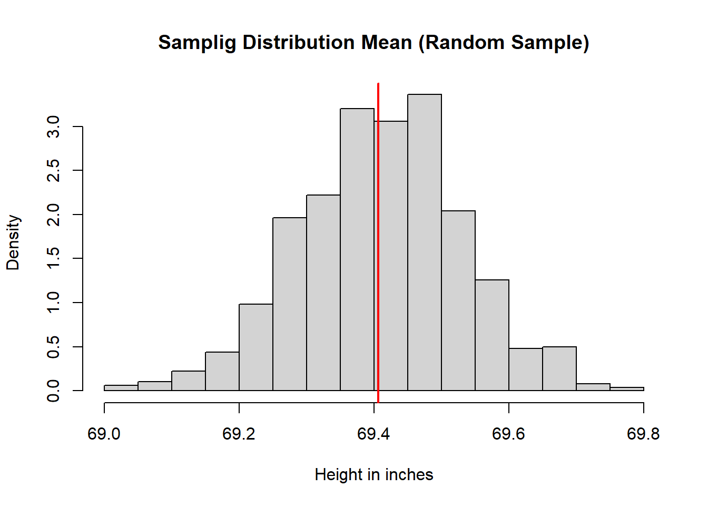
meaDisBiaSam <- hist(meaBiaSam,
breaks = 25,
main = "Samplig Distribution Mean (Biased)",
xlab = "Height in inches",
freq = FALSE)
abline(v = meaPop, lwd = 2, col = rgb(1, 0, 0))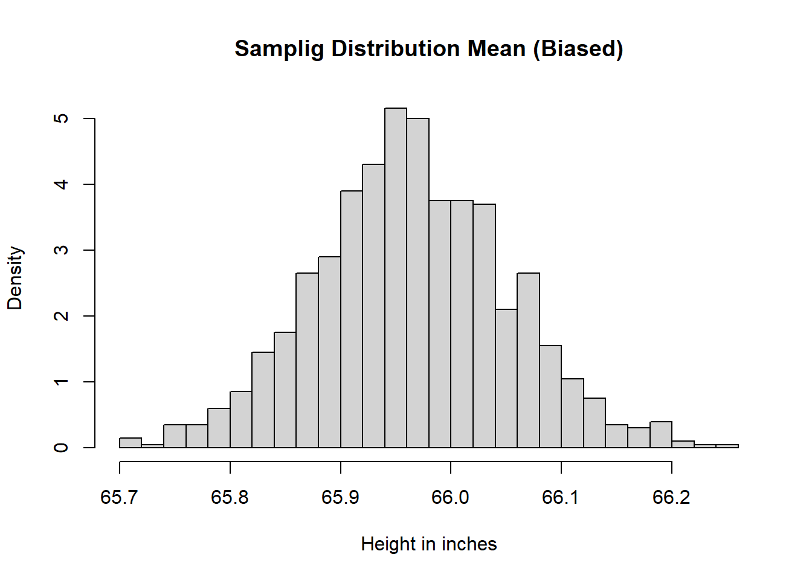
# Comparison
xmin <- min(heiDisPop$breaks, meaDisSimRanSam$breaks, meaDisRanSam$breaks, meaDisBiaSam$breaks)
xmax <- max(heiDisPop$breaks, meaDisSimRanSam$breaks, meaDisRanSam$breaks, meaDisBiaSam$breaks)
ymin <- min(heiDisPop$density, meaDisSimRanSam$density, meaDisRanSam$density, meaDisBiaSam$density)
ymax <- max(heiDisPop$density, meaDisSimRanSam$density, meaDisRanSam$density, meaDisBiaSam$density)
# Simple Random Sample Mean Distribution vs Population Distribution
plot(heiDisRanSam,
xlab = "Height in inches",
main = "Distributions (Population vs Sampling Mean (SRS))",
freq = FALSE,
border = NA,
col = rgb(1, 0, 0, 0.25),
xlim = c(xmin, xmax),
ylim = c(0, ymax))
par(new=TRUE)
plot(meaDisSimRanSam,
freq = FALSE,
main = "",
xlab = "",
border = NA,
col = rgb(0, 0, 1, 0.25),
xlim = c(xmin, xmax),
ylim = c(0, ymax))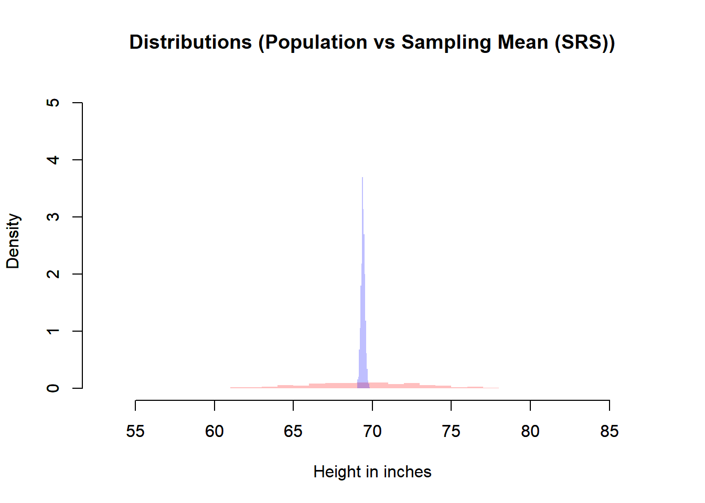
# Random Sample Mean Distribution vs Population Distribution
plot(heiDisRanSam,
xlab = "Height in inches",
main = "Distributions (Population vs Sampling Mean (RS))",
freq = FALSE,
border = NA,
col = rgb(1, 0, 0, 0.25),
xlim = c(xmin, xmax),
ylim = c(0, ymax))
par(new=TRUE)
plot(meaDisRanSam,
freq = FALSE,
main = "",
xlab = "",
border = NA,
col = rgb(0, 1, 0, 0.25),
xlim = c(xmin, xmax),
ylim = c(0, ymax))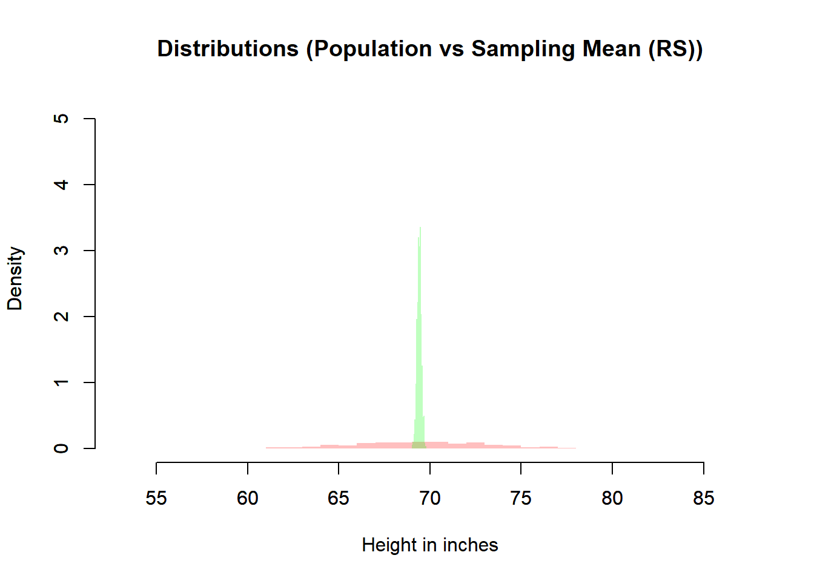
# Bias Sample Mean Distribution vs Population Distribution
plot(heiDisRanSam,
xlab = "Height in inches",
main = "Distributions (Population vs Sampling Mean (Bias SRS))",
freq = FALSE,
border = NA,
col = rgb(1, 0, 0, 0.25),
xlim = c(xmin, xmax),
ylim = c(0, ymax))
par(new=TRUE)
plot(meaDisBiaSam,
freq = FALSE,
main = "",
xlab = "",
border = NA,
col = rgb(0, 1, 0, 0.25),
xlim = c(xmin, xmax),
ylim = c(0, ymax))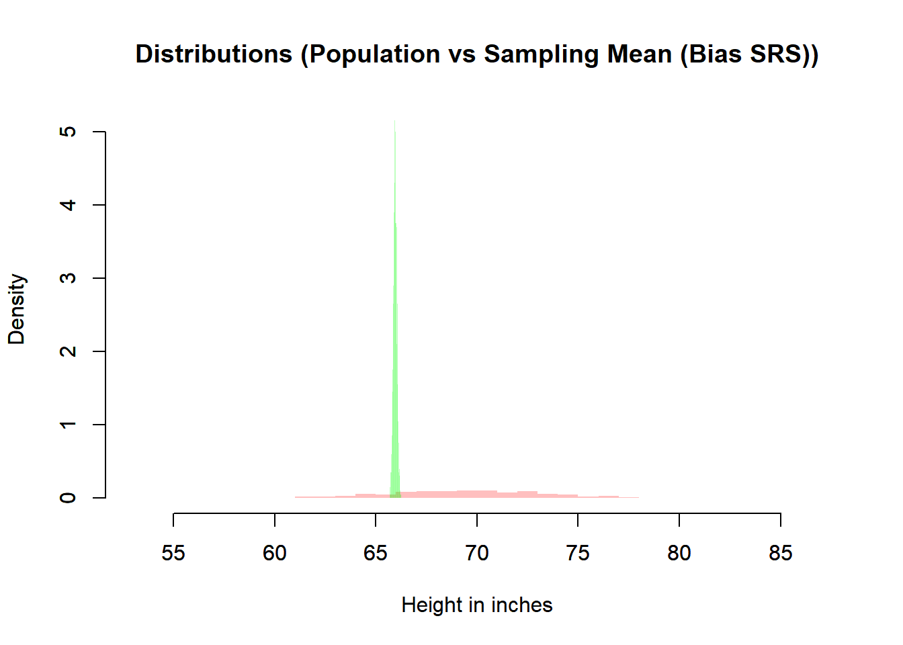
# Comparison
xmin <- min(meaDisSimRanSam$breaks, meaDisRanSam$breaks, meaDisBiaSam$breaks)
xmax <- max(meaDisSimRanSam$breaks, meaDisRanSam$breaks, meaDisBiaSam$breaks)
ymin <- min(meaDisSimRanSam$density, meaDisRanSam$density, meaDisBiaSam$density)
ymax <- max(meaDisSimRanSam$density, meaDisRanSam$density, meaDisBiaSam$density)
# Simple Random Sample Mean Distribution vs Population Distribution
plot(meaDisSimRanSam,
xlab = "Height in inches",
main = "Sampling Mean Distributions (SRS vs RS vs BIased SRS)",
freq = FALSE,
border = NA,
col = rgb(0, 0, 1, 0.25),
xlim = c(xmin, xmax),
ylim = c(0, ymax))
par(new=TRUE)
plot(meaDisRanSam,
xlab = "",
main = "",
freq = FALSE,
border = NA,
col = rgb(0, 1, 0, 0.25),
xlim = c(xmin, xmax),
ylim = c(0, ymax))
par(new=TRUE)
plot(meaDisBiaSam,
xlab = "",
main = "",
freq = FALSE,
border = NA,
col = rgb(1, 0, 1, 0.25),
xlim = c(xmin, xmax),
ylim = c(0, ymax))
abline(v = meaPop, lwd = 2, col = rgb(1, 0, 0))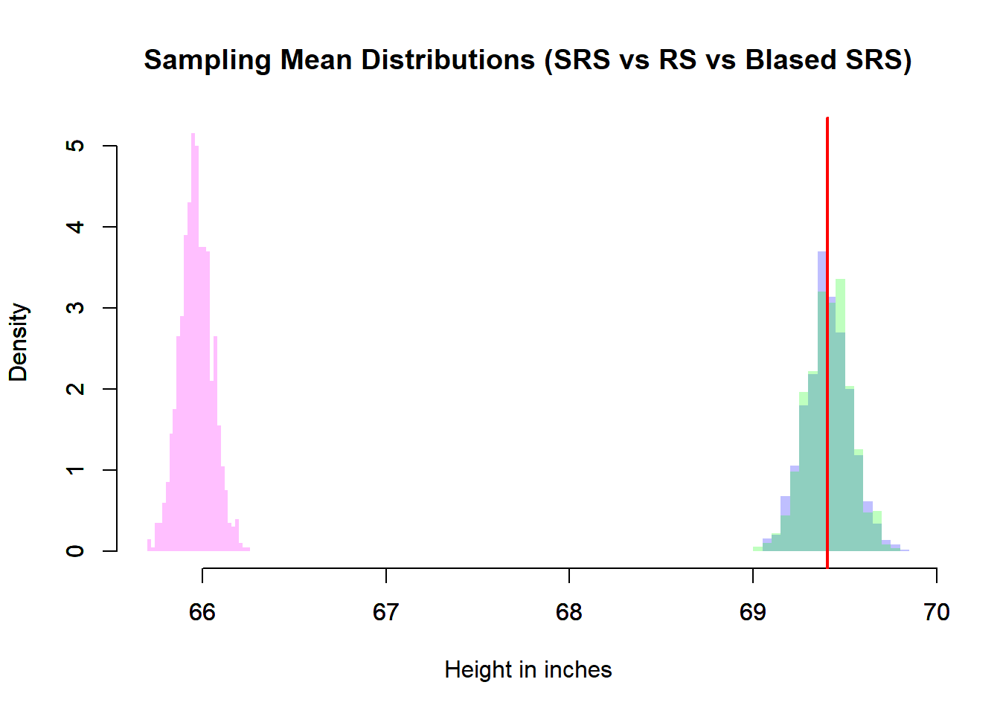
In the simulation:
meaSimRanSamrepresents simple random sampling from the finite population.meaRanSamrepresents sampling from a normal population model.meaBiaSamrepresents a biased sampling scheme.
Each histogram approximates the sampling distribution of \(\bar{X}\).
6.8.3.2 What We Observe
Center
- The simple random sample mean distribution centers at \(\mu\).
- The random normal sampling also centers at \(\mu\).
- The biased sampling distribution is shifted away from \(\mu\).
Spread
- The sampling distribution is much narrower than the population distribution.
- This narrowing reflects \(\mathbb{V}(\bar{X}) = \sigma^2 / n\).
Effect of Sample Size (
samSiz)- Increasing
samSizshrinks the spread. - The histograms become tighter around \(\mu\).
- The standard error decreases at rate \(1/\sqrt{n}\).
- Increasing
Effect of Number of Replications (
numRep)- Increasing
numRepimproves the smoothness of the histogram. - It does not change the true sampling distribution.
- Very small replication counts produce unstable visual approximations.
- Increasing
6.8.4 Population vs Sampling Distribution
It is essential to distinguish:
- Population distribution: variability of individual observations \(X_i\).
- Sampling distribution: variability of the statistic \(\bar{X}\).
The sampling distribution is always less variable:
\[ \mathbb{V}(\bar{X}) = \frac{\sigma^2}{n} < \sigma^2. \]
Thus, averages are more stable than individual observations.
6.8.5 Effect of Bias
The biased sampling example demonstrates an important principle:
Even though
\[ \mathbb{V}(\bar{X}) = \frac{\sigma^2}{n} \]
still holds under independence, the expectation changes if the sampling scheme does not represent the population.
Instead of
\[ \mathbb{E}[\bar{X}] = \mu, \]
we get
\[ \mathbb{E}[\bar{X}] \neq \mu. \]
The sampling distribution is then centered at the wrong value.
This illustrates a critical principle:
Increasing sample size reduces variance but does not fix bias.
6.8.6 Summary
For i.i.d. observations:
- \(\mathbb{E}[\bar{X}] = \mu\) (unbiasedness)
- \(\mathbb{V}(\bar{X}) = \sigma^2 / n\)
- \(\text{SE}(\bar{X}) = \sigma / \sqrt{n}\)
- Variability decreases as \(n\) increases
- The distribution becomes approximately normal for large \(n\)
- Bias shifts the center but does not change the variance formula under independence
The sampling distribution of the mean is the foundation of:
- Confidence intervals
- Hypothesis testing
- Statistical estimation theory
It formalizes why averaging produces stable, reliable inference.
6.9 Shape of the Sampling Distribution of the Mean
Understanding the shape of the sampling distribution of the mean is central to statistical inference. While the mean and variance determine its center and spread, the form of the distribution determines whether normal-based inference is justified.
Let \(X_1, \dots, X_n\) be i.i.d. with mean \(\mu\) and variance \(\sigma^2\), and let
\[ \bar{X} = \frac{1}{n}\sum_{i=1}^n X_i. \]
The distribution of \(\bar{X}\) depends critically on the distribution of the underlying population.
6.9.1 When the Population is Normal
If
\[ X_i \sim \mathcal{N}(\mu, \sigma^2), \]
then for any sample size \(n\),
\[ \bar{X} \sim \mathcal{N}\left(\mu, \frac{\sigma^2}{n}\right). \]
This is an exact result — not an approximation.
The reason is structural: linear combinations of independent normal random variables are also normal. Since \(\bar{X}\) is a linear combination of normal variables, it must itself be normal.
Key implication: If the population is normal, small sample sizes are not a problem for normal-based inference.
6.9.2 When the Population is Not Normal
If the population distribution is not normal, the sampling distribution of \(\bar{X}\) is not necessarily normal for small \(n\).
However, the Central Limit Theorem (CLT) states that:
As \(n \to \infty\), the distribution of \[ \frac{\bar{X} - \mu}{\sigma/\sqrt{n}} \] converges in distribution to \(\mathcal{N}(0,1)\).
Equivalently,
\[ \bar{X} \approx \mathcal{N}\left(\mu, \frac{\sigma^2}{n}\right) \quad \text{for large } n. \]
This approximation improves as:
- Sample size increases,
- The population distribution is less skewed,
- The population has finite variance.
6.9.3 Intuition Behind the Central Limit Theorem
Each \(X_i\) may be highly skewed or discrete. But when we average:
- Extreme values offset one another,
- Irregularities smooth out,
- The resulting distribution becomes symmetric and bell-shaped.
Averaging acts as a stabilizing mechanism.
The CLT explains why the normal distribution appears ubiquitously in statistics, even when the underlying data are not normal.
6.9.4 Simulation Examples
To illustrate the CLT, consider three different populations:
- Binomial (discrete and bounded)
- Poisson (discrete and skewed)
- Normal (already symmetric)
In each case, we generate many sample means and examine their distribution.
6.9.4.1 Binomial Example
Population:
- \(X \sim \text{Binomial}(1, 0.5)\)
- This is a Bernoulli random variable.
- It is discrete and highly non-normal.
Simulation:
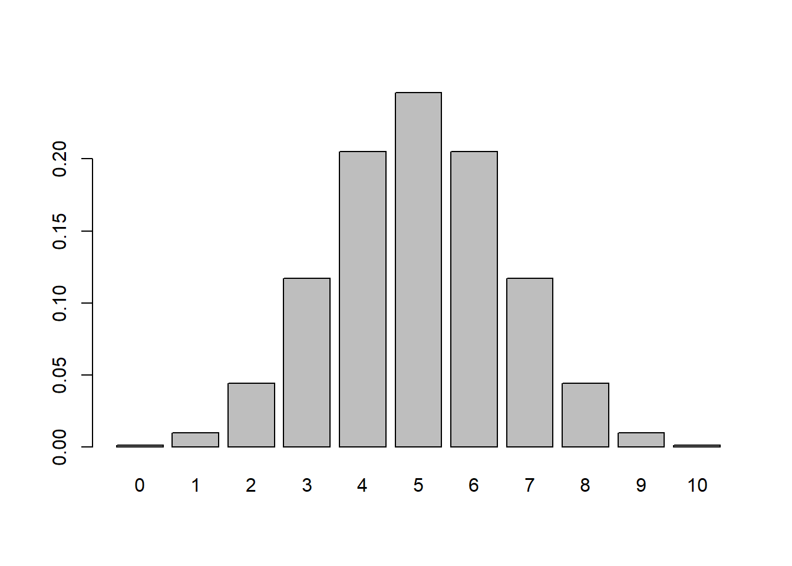
# Distribution of the Mean
means <- replicate(5000, mean(rbinom(20,10,0.5)))
hist(means, probability=TRUE)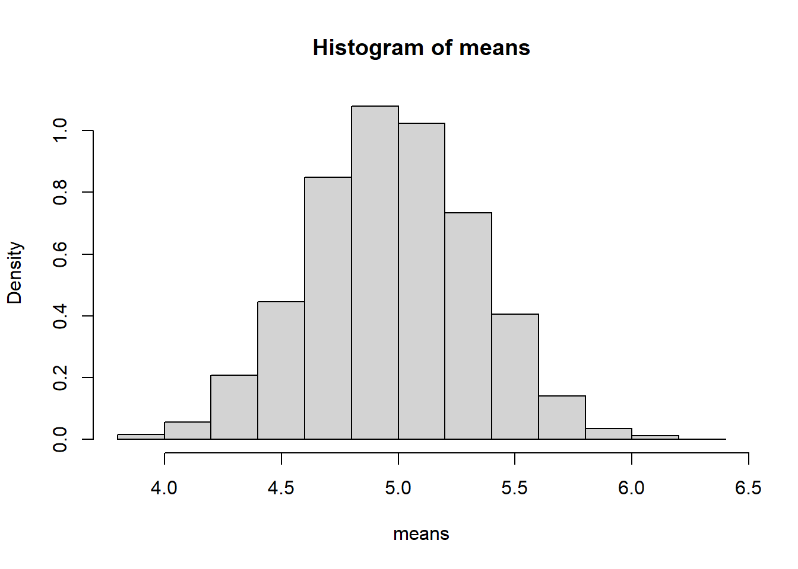
6.9.4.1.1 Interpretation
- Each sample consists of 20 Bernoulli trials.
- The histogram represents the sampling distribution of \(\bar{X}\).
- Despite the discrete nature of the population, the histogram appears approximately bell-shaped.
Even though individual observations are only 0 or 1, their average behaves approximately normally for \(n=20\).
6.9.4.2 Poisson Example
Population:
- \(X \sim \text{Poisson}(3)\)
- Discrete and right-skewed.
Simulation:
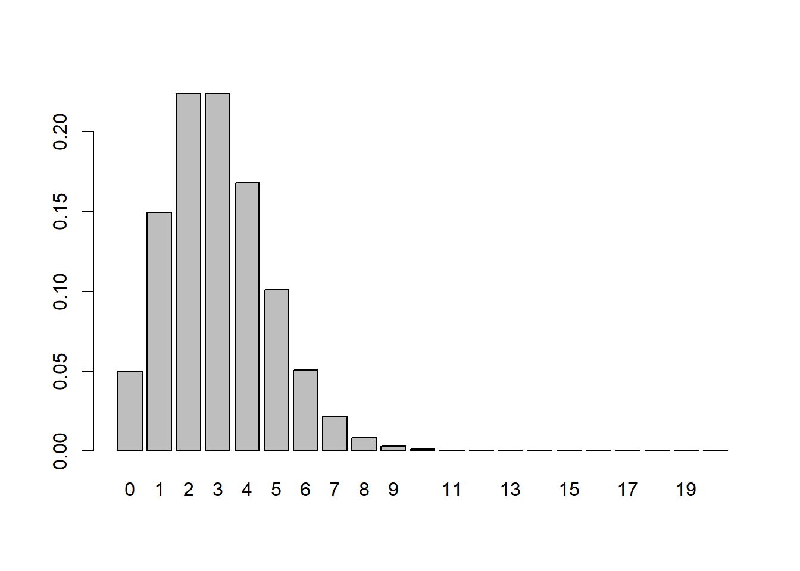
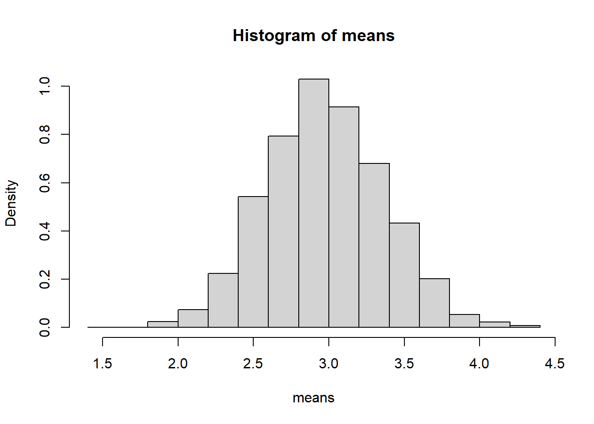
6.9.4.4 Comparing the Three Cases
| Population Type | Population Shape | Sampling Distribution Shape |
|---|---|---|
| Binomial | Discrete | Approximately normal |
| Poisson | Skewed | More symmetric, approx. normal |
| Normal | Symmetric | Exactly normal |
The remarkable conclusion is:
The sampling distribution of the mean tends toward normality regardless of the population distribution, provided the variance is finite.
6.9.4.5 Effect of Sample Size
If you change the sample size from 20 to:
- 5 → distribution looks rough and possibly skewed.
- 50 → noticeably smoother and more symmetric.
- 100 → very close to normal.
Formally:
\[ \bar{X} \overset{d}{\to} \mathcal{N}\left(\mu, \frac{\sigma^2}{n}\right). \]
The approximation improves with larger \(n\).
6.9.5 Practical Implications
The CLT justifies:
- Confidence intervals for means,
- Hypothesis tests about means,
- Approximate normal modeling in large samples.
It explains why normal-based procedures are widely applicable even when the underlying data are not normally distributed.
6.9.6 Summary
- If the population is normal → \(\bar{X}\) is exactly normal.
- If the population is not normal → \(\bar{X}\) is approximately normal for large \(n\).
- Averaging reduces skewness and variability.
- The approximation improves with sample size.
- The variance of \(\bar{X}\) is always \(\sigma^2/n\) (under independence).
The Central Limit Theorem is one of the foundational pillars of probability and statistics, providing the theoretical justification for large-sample inference.
6.10 Sampling Distribution of a Variance
Let \(X_1, \dots, X_n\) be i.i.d. random variables with mean \(\mu\) and variance \(\sigma^2\). The sample variance is defined as
\[ S^2 = \frac{1}{n-1}\sum_{i=1}^n (X_i - \bar{X})^2. \]
The sample variance is itself a random variable because it is computed from random observations. Just like the sample mean \(\bar{X}\), its value changes from sample to sample.
6.10.1 Why the Denominator is \(n-1\)
The use of \(n-1\) instead of \(n\) is not arbitrary. The quantity
\[ \sum_{i=1}^n (X_i - \bar{X})^2 \]
measures total variability around the sample mean. However, once \(\bar{X}\) is computed, the deviations are no longer independent. Only \(n-1\) of them are free to vary.
This leads to the concept of degrees of freedom: after estimating \(\bar{X}\), we lose one degree of freedom. Therefore, dividing by \(n-1\) ensures that
\[ \mathbb{E}[S^2] = \sigma^2, \]
meaning the sample variance is an unbiased estimator of the population variance.
6.10.2 Distribution Under Normality
If the population distribution is normal,
\[ X_i \sim \mathcal{N}(\mu, \sigma^2), \]
then the sampling distribution of the variance has an exact and remarkable form:
\[ \frac{(n-1)S^2}{\sigma^2} \sim \chi^2_{n-1}. \]
That is, the scaled sample variance follows a chi-squared distribution with \(n-1\) degrees of freedom.
6.10.3 The Chi-Squared Distribution
The chi-squared distribution arises as the sum of squared independent standard normal variables. If
\[ Z_1, \dots, Z_k \sim \mathcal{N}(0,1) \]
independently, then
\[ \sum_{i=1}^k Z_i^2 \sim \chi^2_k. \]
This connection explains why normality of the population is essential. The derivation of the sampling distribution of \(S^2\) ultimately reduces to expressing variability in terms of squared standard normal variables.
6.10.4 Shape of the Sampling Distribution
The chi-squared distribution:
- Is defined only for positive values.
- Is right-skewed for small degrees of freedom.
- Becomes more symmetric as \(n\) increases.
- Has mean equal to its degrees of freedom.
Thus,
\[ \mathbb{E}\left[\frac{(n-1)S^2}{\sigma^2}\right] = n-1. \]
Rescaling gives
\[ \mathbb{E}[S^2] = \sigma^2. \]
As \(n\) increases:
- The distribution becomes less skewed.
- The variability of \(S^2\) decreases.
- The estimator becomes more concentrated around \(\sigma^2\).
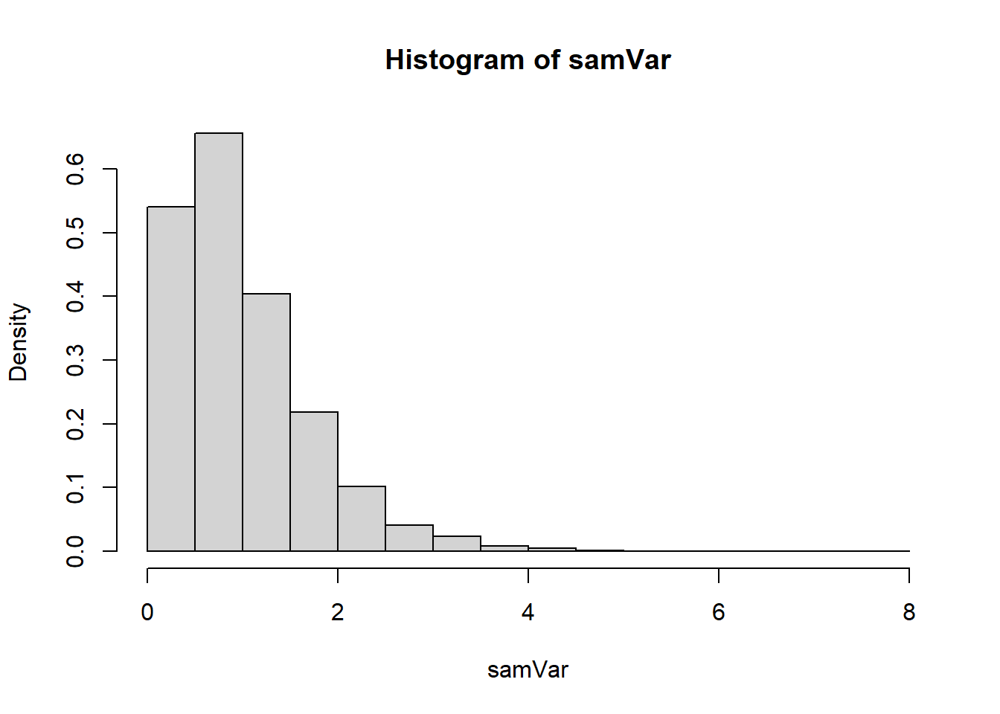
6.10.5 Contrast with the Sample Mean
The sampling distribution of the mean is symmetric and (eventually) normal.
The sampling distribution of the variance:
- Is not normal.
- Is positively skewed.
- Depends critically on the assumption of normality.
This difference is fundamental. Inference about variances relies on the chi-squared distribution, while inference about means relies on normal (or \(t\)) distributions.
6.10.6 Key Takeaways
- \(S^2\) is a random variable.
- \(\mathbb{E}[S^2] = \sigma^2\) (unbiasedness).
- If the population is normal, \[ \frac{(n-1)S^2}{\sigma^2} \sim \chi^2_{n-1}. \]
- The distribution is right-skewed for small \(n\) and becomes more symmetric as \(n\) increases.
- Normality of the population is required for the exact chi-squared result.
The sampling distribution of the variance is the foundation for:
- Confidence intervals for \(\sigma^2\),
- Hypothesis tests about variability,
- Construction of the \(t\) distribution.
6.11 Assessing Normality of a Population Distribution
Many classical inferential procedures rely on the assumption that the population distribution is normal. In particular:
- The exact sampling distribution of \(S^2\) requires normality.
- Small-sample inference for means relies on the \(t\) distribution.
- Many parametric models assume Gaussian errors.
It is therefore essential to understand how to assess whether a population distribution is plausibly normal.
Normality can never be proven from finite data. Instead, we evaluate whether the observed sample is consistent with what we would expect under a normal model.
There are two complementary approaches:
- Graphical methods (especially the Q–Q plot)
- Formal hypothesis tests
In practice, graphical methods are fundamental because they reveal how the distribution deviates from normality.
6.11.1 Theoretical Foundation
A random variable \(X\) is normally distributed if its cumulative distribution function (CDF) matches that of a normal distribution:
\[ X \sim \mathcal{N}(\mu, \sigma^2). \]
This implies that the standardized variable
\[ Z = \frac{X - \mu}{\sigma} \]
follows a standard normal distribution.
Normality therefore means that the quantiles of the data align with the quantiles of a normal distribution.
This observation leads directly to the construction of the quantile–quantile plot.
6.11.1.1 The Q–Q Plot
The idea behind a Q–Q plot is conceptually simple:
If the data come from a normal distribution, then their ordered values should match the theoretical normal quantiles.
Let \(X_1, \dots, X_n\) be a sample. Construct the Q–Q plot as follows.
6.11.1.1.1 Step 1: Order the Data
Let
\[ X_{(1)} \le X_{(2)} \le \dots \le X_{(n)} \]
denote the order statistics.
6.11.1.1.2 Step 2: Compute Theoretical Probabilities
For each ordered observation \(X_{(i)}\), associate a cumulative probability:
\[ p_i = \frac{i - 0.5}{n}. \]
This choice centers each observation within its empirical probability interval.
6.11.1.1.3 Step 3: Compute Theoretical Normal Quantiles
Let \(\Phi^{-1}\) denote the inverse CDF of the standard normal distribution.
Define
\[ z_i = \Phi^{-1}(p_i). \]
These are the theoretical quantiles from \(\mathcal{N}(0,1)\).
If the population has unknown \(\mu\) and \(\sigma\), we estimate them using:
\[ \hat{\mu} = \bar{X}, \qquad \hat{\sigma} = S. \]
Then the comparable normal quantiles are:
\[ q_i = \hat{\mu} + \hat{\sigma} z_i. \]
6.11.1.2 Why This Works
If \(X\) truly follows \(\mathcal{N}(\mu,\sigma^2)\), then
\[ \mathbb{P}(X \le q_i) = p_i. \]
Thus the \(p_i\)-th population quantile should equal \(q_i\). The ordered sample values approximate those population quantiles.
Therefore:
- Normal data → linear Q–Q plot
- Right-skewed data → upward curvature
- Left-skewed data → downward curvature
- Heavy tails → deviations at extremes
The Q–Q plot transforms the question of distributional shape into a question of linearity.
6.11.1.3 Example: Constructing a Q–Q Plot Normal Distribution
We now construct a Q–Q plot step by step from first principles.
Generate Data from a Normal Distribution
set.seed(1)
# Generate Samples from a Norma
x <- rnorm(100, mean = 0, sd = 1)
# Sort the Data
x_sorted <- sort(x)
# Theoretical Probabilities
n <- length(x_sorted)
p <- (1:n - 0.5)/n
# Theoretical QUantiles
z <- qnorm(p)
# Plot the Data
plot(z, x_sorted,
main = "Q-Q Plot (Manual Construction)",
xlab = "Theoretical Normal Quantiles",
ylab = "Sample Quantiles")
abline(0, 1, col = "red", lwd = 2)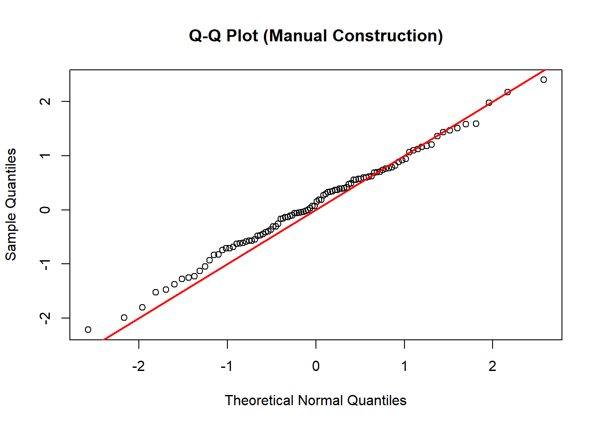
Since the data are already standard normal, no scaling is necessary. If the data are normal, the points cluster around a line.
6.11.1.4 Example: Constructing a Q–Q Plot Non-Normal Distribution
Now consider skewed data.
set.seed(1)
x <- rchisq(n = 100, df = 5)
x_sorted <- sort(x)
n <- length(x_sorted)
p <- (1:n - 0.5)/n
z <- qnorm(p)
plot(z, x_sorted,
main = "Q-Q Plot (Exponential Data)",
xlab = "Theoretical Normal Quantiles",
ylab = "Sample Quantiles")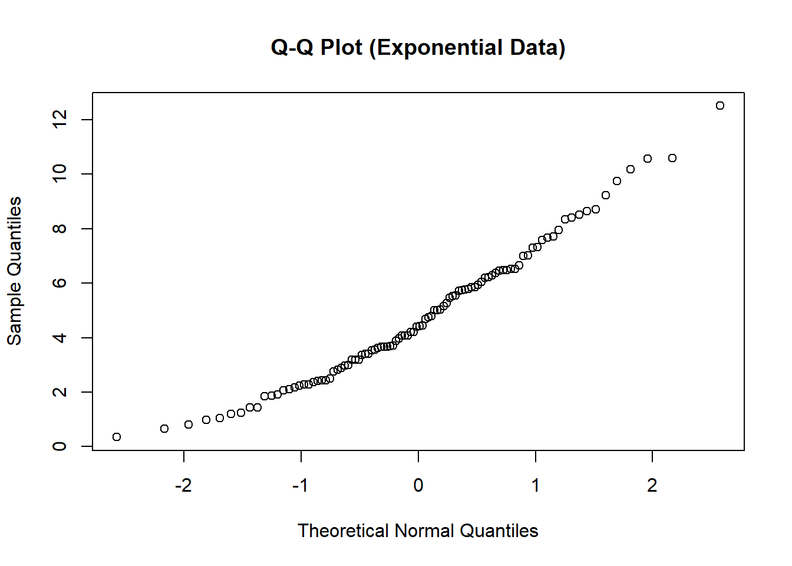
You will observe pronounced curvature:
- Lower tail compressed
- Upper tail stretched
This pattern indicates right skewness and non-normality.
6.11.2 Practical Considerations
When assessing normality:
- For small \(n\), departures are difficult to detect.
- For moderate \(n\), the Q–Q plot is highly informative.
- For large \(n\), slight deviations are inevitable and rarely practically important.
Moreover, by the Central Limit Theorem, inference about means may still be valid even if the population is not normal, provided \(n\) is sufficiently large.
Normality matters most for:
- Small samples
- Inference about variance
- Heavy-tailed distributions
6.11.3 Summary
To assess whether a population is normally distributed:
- Understand that normality implies matching quantiles.
- Construct a Q–Q plot by comparing ordered data to theoretical normal quantiles.
- Interpret deviations from linearity.
- Use formal tests cautiously.
The Q–Q plot provides a direct visual diagnostic grounded in the definition of a distribution via its quantile function.
It is one of the most powerful and conceptually transparent tools in statistical practice.
6.12 Central Insight
Statistics are random variables.
A statistic has:
- An expectation
- A variance
- A distribution
Statistical inference studies these sampling distributions to:
- Estimate parameters
- Quantify uncertainty
- Construct confidence intervals
- Perform hypothesis tests
Probability describes randomness. Statistics uses that description to learn from data.
This is the conceptual bridge from probability to statistics.